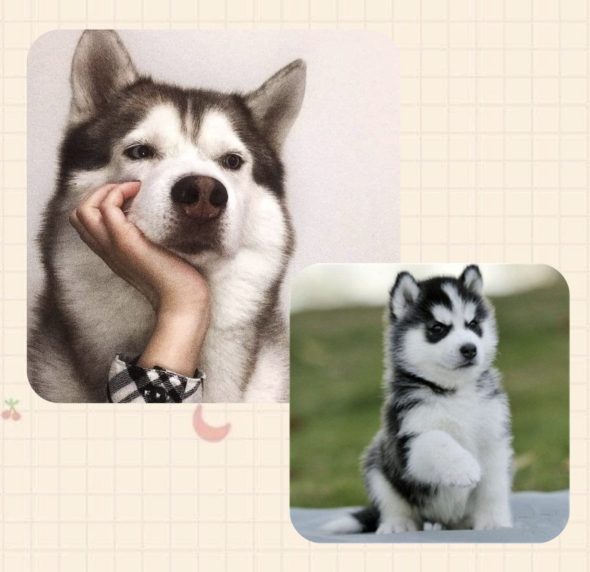

西伯利亞哈士奇犬
（Siberian Husky，來自西伯利亞地區，為當地原生犬種)
嘴部：咬合時牙齒呈剪刀形。
毛色：由黑至白、棕色至紅色不均。
頭部：輪廓分明，有明顯額痕，唇部漸尖。
眼睛：杏仁眼。有藍、棕與陰陽眼〈一藍一棕〉、眼神敏銳、友善。
耳朵：居頭頂，兩耳接近，呈三角形，豎直且耳肉厚，內外均有濃毛。
尾巴：覆蓋著濃密毛髮，無事時自然下垂，警覺時捲於背部上方，跑步時亦捲於上方。

外形好看
哈士奇有著一個漂亮冷酷的外型，幾乎每個見過哈士奇的人，都會發自內心的喜愛牠。
溫順友好
哈士奇很溫順，從來不會主動攻擊人，所以哈士奇與金毛犬、拉布拉多犬並列為三大無攻擊型犬類，而且哈士奇比較容易接受其他的狗狗，不過很多和哈士奇在一起生活的狗狗，到最後都會給帶偏！
活潑好動
飼養一隻哈士奇之後需要每天帶它出去運動，在你已經累趴的時候，它還能和你玩上幾個小時，這所帶來的快樂，是無法用語言來形容的。
表情豐富
哈士奇是個行走的表情包，它精緻的五官和豐富的肢體語言充滿了奇特的表現能力，所以飼養一隻哈士奇能給生活帶來不少樂趣，雖然它平時很調皮但是飼養它的過程真的很快樂！


注意溫度
台灣氣候溫熱，乾燥和通風性是預防皮膚病最佳的方法,儘可能保持你愛犬的乾爽，另外狗狗睡覺的地方最好是常保乾爽。
一定要牽繩
哈士奇是樂愛自由者之一，一旦不小心讓牠跑掉，牠一定會盡全力的狂衝，完全不管主人在後面叫喊或是追跑。
掉毛嚴重
哈士奇有雙層毛一年四季都在換毛，家裡哪都是牠的毛。因為哈士奇的毛髮比較厚實，所以主人沒事要多梳毛。雖然毛髮很長，但哈士奇的體味並不會很重。
運動量大
做為能夠拉雪橇跑長途的哈士奇，就別想牠能整天乖乖在家。牠需要運動，而且運動量絕對不小。一天散步2個小時，根本還不夠。所以如果你沒有時間帶狗狗去散步，就不要養哈士奇，不然牠把你家都給拆了！

進行性視網膜萎縮（PRA）
患有PRA的哈士奇會出現夜視問題，然後逐漸逐漸失去白天的視力。
一段時間後，它可能會變得完全失明。這種致命疾病仍然無法治癒。防止哈士奇獲得PRA的唯一方法是對它的父母進行篩查。
角膜營養不良
這是影響角膜的另一種遺傳性眼病。角膜營養不良可從角膜上的小白點開始，並導致朦朧的視力或不透明。這種疾病對成年幼犬的影響更大，對雌性的影響也大於雄性。
最好每兩年至少有一位好的眼科醫生對您的哈士奇進行檢查。目前，尚無有效的治療方法。
甲狀腺功能減退
當甲狀腺不分泌正常量的甲狀腺激素時，即使牠吃的食物少，但仍應注意不正常的體重增加，皮毛上的禿皮以及非正常脫落都是要注意的。哈士奇是精力充沛的狗，但這個問題導致它無精打采，沒有力量。
鋅反應性皮膚病（缺鋅）
缺鋅在哈士奇中很常見，會導致嘴唇，下巴和眼瞼周圍的毛髮脫落。有時甚至腳，飛節和肘部也受到影響。
經常發生的是灰褐色的結皮形成，因此變成紅色的開放性皮膚傷口。接受獸醫的建議，並確認斑點為鋅缺乏症。鋅補品會有所幫助，但這最好由獸醫決定的。治療以後，毛髮會長回來，但還是需要進行維持劑量的補充。